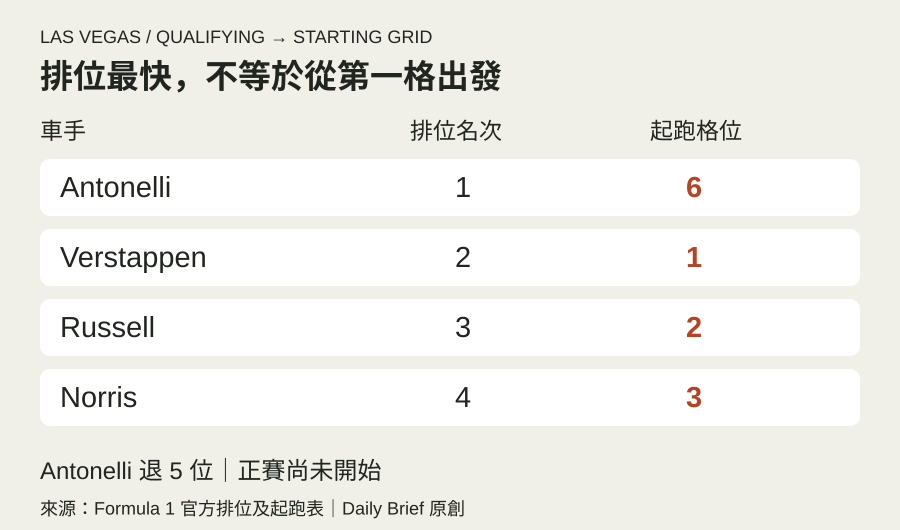

FORMULA 1 / THE ESSENTIALS
Antonelli 排位最快卻退至第六，Verstappen 從 Las Vegas 桿位起跑
收錄於 2026-11-22 日報 · Formula 1 官方排位成績
發生什麼事
- Las Vegas 當地 11 月 20 日排位，Antonelli 以 1:33.893 最快，領先 Verstappen 0.258 秒；但動力單元退五位處罰，使他在官方起跑表列第六。Verstappen 升至第一，Russell 第二，Norris 第三。
- 官方起跑表另列 Piastri 第 17、Sainz 第 20、Stroll 第 21、Bearman 第 22；Bearman 雖未達排位 107% 時間要求，已獲准起跑。這是套用處罰後的起跑安排，不是正賽結果。
影響與限制
- 排位最快與正賽從第一格出發是不同資訊，五車處罰已改變對戰位置。 本期查核時正賽尚未開始；其後若有新裁決仍可能變動，應以臨賽官方名單為準。
後續更新：前期僅報五車退位且排位未完成；本次新增排位成績及官方套用處罰後起跑名單。

原文與查核
以上為整理與解讀，重要細節請回到原文核對。
- Formula 1 官方排位成績 ↗發布 2026-11-21 · 查核 2026-11-22T05:09:18+08:00
- Formula 1 官方起跑名單 ↗發布 2026-11-21 · 查核 2026-11-22T05:09:18+08:00